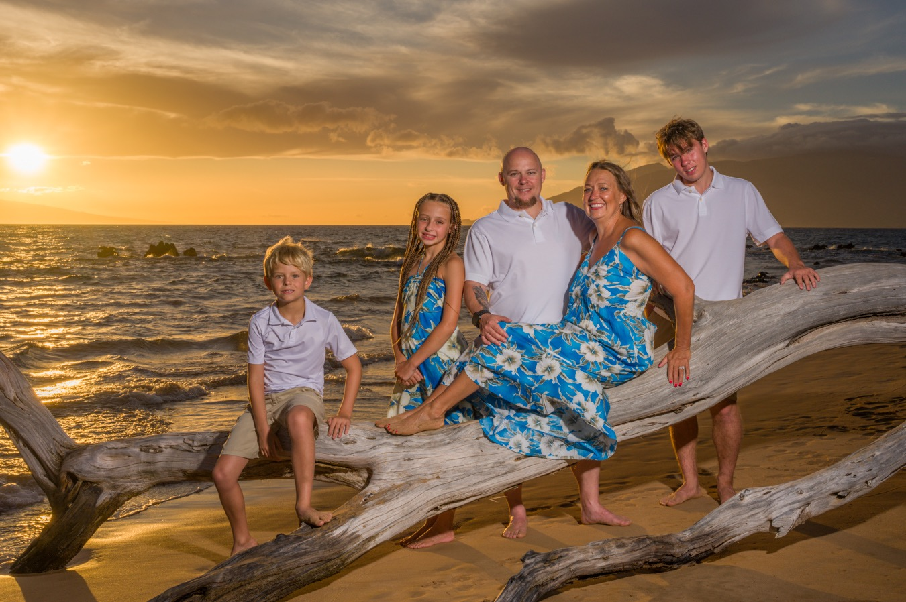
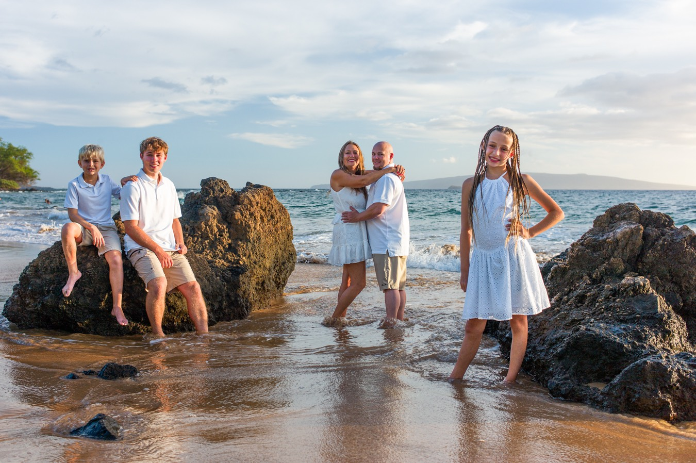

Photography for Wailea Beach Resort Guests
We photograph near the Wailea Beach Resort every evening at sunset — on the quiet, beautiful beaches along this stretch of the Wailea coast. One all-inclusive price, booked directly with our family.
Oceanfront lawns, quiet coastal paths, and golden light right outside your door.

Beautiful beaches, a short walk from your room.
The Wailea Beach Resort — Marriott sits on twenty-two oceanfront acres between Ulua Beach and Wailea Beach. That gives us our pick of some of South Maui’s loveliest sand just steps away, so we can meet the light exactly where it’s best on a given evening — and steer clear of the busiest spots.
For guests staying at the resort, it’s an easy stroll down to the sand. Spend your afternoon at the pools or the spa, get ready in your room, and meet us as the light turns gold.
All-inclusive — with no middle-man markup.
When a photographer is arranged through a resort or concierge desk, a commission is almost always folded into what you pay. We’re different. Wailea Photo is an independent, family-run studio, so you book directly with us — and the price you see is the entire price, with no concierge fee or third-party markup added on top.
Every session is all-inclusive: one flat rate covers the shoot and all of your naturally edited, high-resolution images, with full print rights and high-end color finishing, delivered in a private online gallery within about 48 hours — no per-image charges, no hidden gallery unlock fees and no upsells afterward. And every session is photographed personally by one of the Balters, never an outside contractor.
What guests ask us.
Where do you photograph for Wailea Beach Resort guests?
On one of the beautiful beaches a short walk from the resort. Because your resort sits between Ulua and Wailea beaches, we can choose the best light — and the least-crowded sand — for your particular evening.
Do I have to book through the resort’s concierge?
No. We’re an independent, family-run studio, so you book directly with us at one all-inclusive price. Nothing is added on top — no concierge fee and no commission.
How much is a session, and what’s included?
Every session is all-inclusive: one price, quoted when you book, covers the shoot and every one of your naturally edited, high-resolution images, delivered in a private online gallery within about 48 hours.
We have young children — can we stay closer to the resort?
Yes. For families with toddlers who’d rather not make a longer walk, we’ll do our best to accommodate a spot closer in. We’ll go over the options — and any resort parking involved — when you book.
What time will we meet?
We photograph around sunset, when the light is at its best, so your exact start time shifts with the season. We’ll confirm the evening’s sunset time and where to meet as soon as you book.